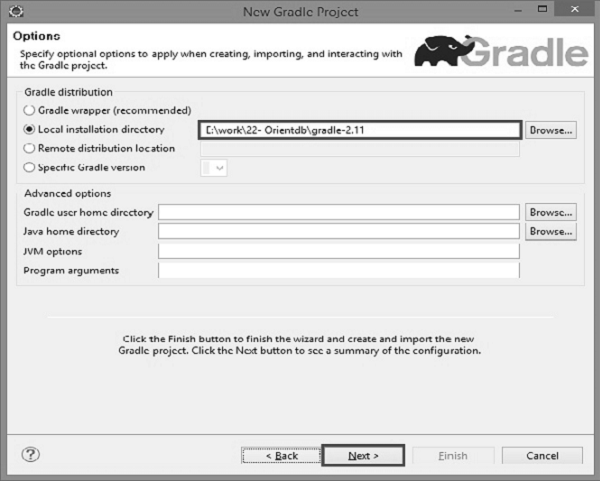
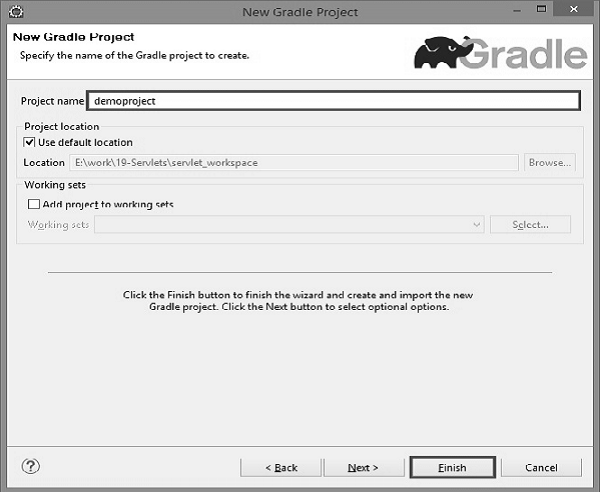

This chapter explains the integration of Eclipse and Gradle. Following are the steps to add Gradle plugin to Eclipse.
Open the eclipse which is installed in your system. Go to help → click EclipseMarketplace as shown in the following screenshot.
Click Eclipse Marketplace, there you will find the following screenshot. On the left search bar, type buildship. Buildship is a Gradle integration plugin. When you find buildship on your screen, click Install button present on the right side of the screen as shown in the following screenshot.
You will find the following screenshot. There you need to confirm the software installation by clicking the confirm button. Take a look at the following screenshot.
Click ‘I accept the terms of the license agreement’ in the following screen and then click ‘Finish’. Take a look at the following screenshot.
It will take some time to install. Take a look at the following screenshot.
After that, it will ask for restarting Eclipse. There you will select Yes.
While verifying, we will create a new project by following the given procedure. In the eclipse, go to file → click New → click Other projects. The following screen pops up. Select Gradle Project and click Next.
After clicking the Next button, the following screen pops up. On the screen, you will have to provide the Gradle home directory path of local file system and then click Next button as shown in the following screenshot.
Take a look at the following screenshot. You will have to provide the name for Gradle project. In this tutorial, we are using the name demoproject. Click Finish button.
In the following screenshot, you will need to confirm the project. For which you will have to click Finish button.
After successful installation of Gradle plugin, please check the demo project directory structure for the default files and folders as shown in the following screenshot.